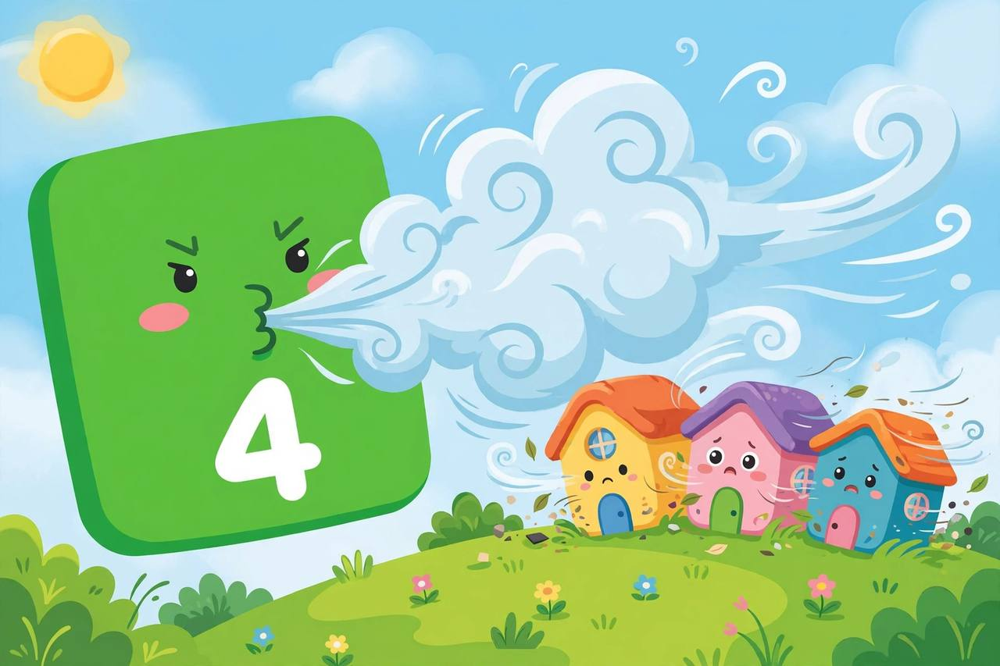
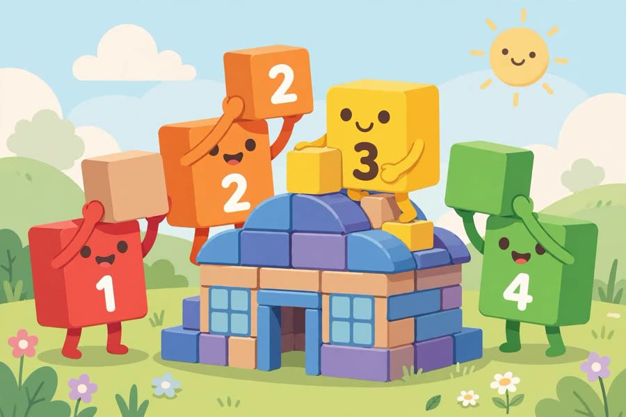

📖 剧情简介
三只小猪盖房子，大坏正方形来了！大家一起数到四！
Three little pigs build houses, but here comes the Big Bad Square! Let's count to four!
🎭 角色
一号 One、二号 Two、三号 Three、四号 Four（大坏正方形 Big Bad Square）
（三只小猪的工地 / The three little pigs' building site）
1
One一号
I'm the first little pig! My house is made of one block!
我是第一只小猪！我的房子用一个方块盖！
2
Two二号
I'm the second little pig! My house is made of two blocks!
我是第二只小猪！我的房子用两个方块盖！
3
Three三号
I'm the third little pig! My house is made of three blocks!
我是第三只小猪！我的房子用三个方块盖！
（大坏正方形登场 / The Big Bad Square appears）
4
Four四号
I'm the Big Bad Square! I'll huff and I'll puff!
我是大坏正方形！我要吹，我要吼！

I'm the Big Bad Square! I'll huff and I'll puff!
（四号吹倒了房子 / Four blows the houses down）
1
One一号
Oh no! Our houses!
糟糕！我们的房子！
2
Two二号
Wait… let's count! One, two, three… four!
等等……我们数数！一、二、三……四！
3
Three三号
Four! You're not bad — you're our friend!
四！你不坏——你是我们的朋友！
4
Four四号
Really? Then let's build one big house together!
真的吗？那我们一起盖一座大房子吧！

Then let's build one big house together!
A
All大家
One, two, three, four — friends forevermore!
一、二、三、四——永远是朋友！